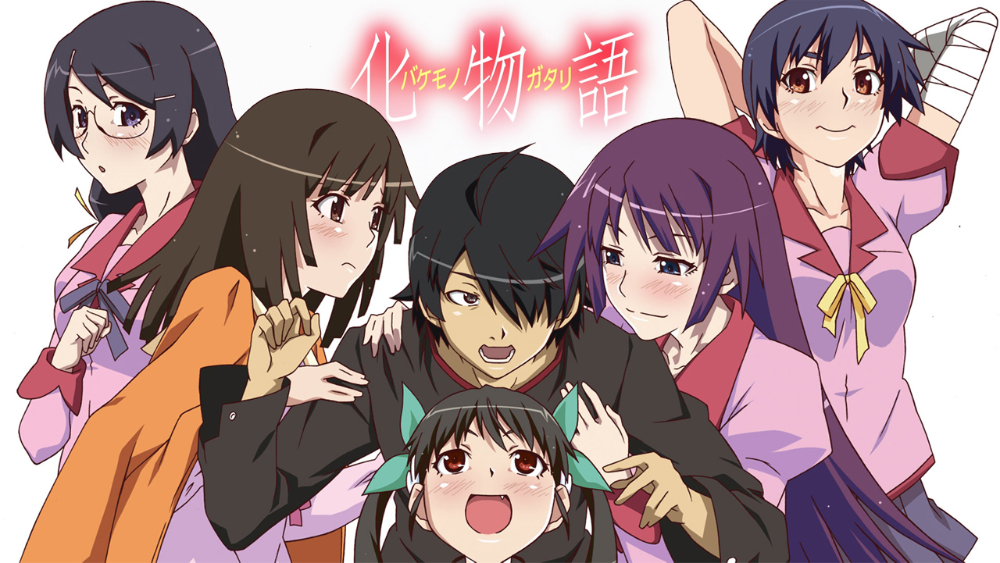

cuales son
los ordenes
monogatari series cuenta con 3 ordenes acutualmente los cuales son
- orden de emision
- orden semi cronologico
- orden cronologico

La serie de Monogatari se centra en Koyomi Araragi, un estudiante de tercer año de instituto que es ahora casi humano después de haber sido vampiro por un tiempo. Un día, una compañera de clase llamada Hitagi Senjōgahara, quien nunca habla con nadie, cae desde una alta escalera en los brazos de Koyomi
monogatari series cuenta con 3 ordenes acutualmente los cuales son
es mejor verlo en emision porque no tienes que dar muchas vueltas y te quedas impactado muchas veces porque recuerdas a los personajes y su historia muy bien para entender la situacion lo malo esque si no tienes buena memoria no entenderas mucho al verlo de esta manera
.jpg)
es bueno si no tienes tanta memoria y no quieres dar muchas vueltas en todo asi entiendes mejor y es mas concreto la desventaja esque hay solo un punto donde no entenderas y quedaras asi
.jpg)
con el orden cronologico la unica ventaja esque comprenderas de la mejor manera la historia pero vas a dar muchas vueltas para verlo asi
Pdta: una sugerencia es verte primero el orden de emision de base para no llegar a confundirte pero esto es si estas muy interesado en monogatari

si tienes una idea para otro blog informativo no te olvides que puedes contactarme para hacer uno del tema y darte el credito de la idea o si tienes alguna duda y quieres que te ayude hablame por el correo